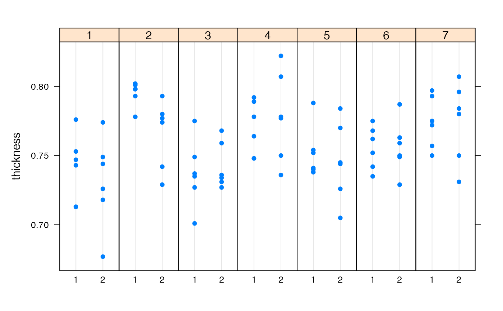

This data set contains the thickness and additional data for 84 metal plates.
data("ss.data.thickness2")A data frame with 84 observations on the following 5 variables.
a factor with the day (seven days)
a factor with the shift (two shifts)
a numeric vector with the thickness (in)
a factor with the day-shift combination
an integer vector with the number of flaws on the surface of sampled plates
Examples 8.1 and 9.9 in the reference below.
This data set illustrates concepts in the book ``Quality Control with R''.
Cano, E.L. and Moguerza, J.M. and Prieto Corcoba, M. (2015) Quality Control with R. An ISO Standards Approach. Springer.
data(ss.data.thickness2)
str(ss.data.thickness2)
#> 'data.frame': 84 obs. of 5 variables:
#> $ day : Factor w/ 7 levels "1","2","3","4",..: 1 1 1 1 1 1 1 1 1 1 ...
#> $ shift : Factor w/ 2 levels "1","2": 1 1 1 1 1 1 2 2 2 2 ...
#> $ thickness: num 0.713 0.776 0.743 0.713 0.747 0.753 0.749 0.726 0.774 0.744 ...
#> $ ushift : chr "1.1" "1.1" "1.1" "1.1" ...
#> $ flaws : int 9 NA NA NA NA NA 2 7 9 NA ...
lattice::dotplot(thickness ~ shift | day,
data = ss.data.thickness2,
layout = c(7, 1))
